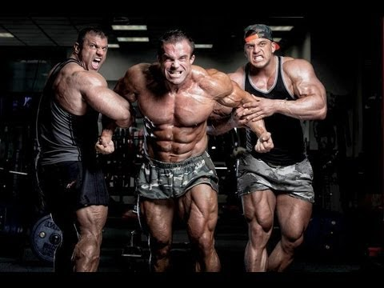

Testépítés

A testépítés célja, hogy különféle gyakorlatok, főképp súlyzós edzés segítségével növelje az izomzatot, valamint hogy népszerűsítse az egészséges életmódot és a fitneszt. Versenysportként a testépítés az izomtömeg definiáltságát, szimmetriáját, esztétikáját hivatott bemutatni művészi módon. Az edzésekhez többek között kézisúlyzókat, súlytárcsákat, különféle rudakat (francia rúd, kétkezes súlyzórúd) és egyéb ellenállásos eszközöket, gépeket használnak. A testépítésben is fontos szerepet kap az étrend, a regenerálódásra szánt pihenőidő, a gyakorlatok szabályos végzése, valamint a kiegészítő mozgásformák, mint az aerob edzés. A legtöbb testépítő táplálékkiegészítőket is fogyaszt, például fehérjeport.A testépítők egy része használ anabolikus szteroidokat az izomépítés és a teljesítmény fokozásához, aminek azonban egészségkárosító mellékhatásai lehetnek. A testépítés története feltehetően kőemelő versenyekkel kezdődött, melynek sok kultúrában voltak hagyományai. A 19. században erőemberek járták Európát és Amerikát, és súlyemelő mutatványokkal szórakoztatták a közönséget. A 20. század elején kezdtek el komolyabban foglalkozni a test izomzatának kifejezetten látvány szempontjából történő (azaz nem funkcionális) fejlesztésével. A sportágat nagyon sokáig nem vették komolyan, csupán az 1970-es években, az Acélizom című dokumentumdráma megjelenése után kezdett el szélesebb körben terjedni. Ugyancsak az 1970-es években, a feminizmusnak köszönhetően élénkült meg az érdeklődés a női testépítés iránt. A professzionális testépítésben ma a legnagyobb hangsúlyt a minél nagyobb izomtömegre fektetik, ezzel szemben létrejött az úgynevezett „naturál testépítés”, A mely a természetes módszerekkel elérhető fizikumot népszerűsíti. A Testépítők Nemzetközi Szövetsége (IFBB) rendezi a rangos A Mr. Olympia-versenyt; a cím megszerzőjét tartják az az évi legjobb professzionális testépítőnek. 1989 óta rendezik meg a szintén elismert Arnold Classic bajnokságot is. A professzionális versenyzők mellett az amatőr testépítők számára is rendeznek világversenyeket, az AIFBB saját amatőr versenye mellett létezik még például a National Amateur Body-Builders’ Association (NABBA) által szervezett a Mr. és Ms. Universe-verseny is. Magyarországon is több versenyt rendeznek, az AIFBB Testépítő és a Fitness Magyar Bajnokság mellett a legjelentősebb verseny a Superbody.